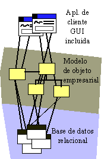
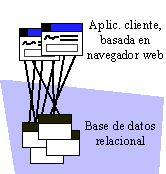

| Concepto: Patrones de distribución |
 |
|
| Elementos relacionados |
|---|
Nodos, procesadores y dispositivosLos procesadores y dispositivos son estereotipos comunes de nodo. La distinción entre ellos es difícil de valorar, ya que ahora hay muchos dispositivos que contienen su propia CPU. No obstante, la distinción entre procesadores y dispositivos reside en el tipo de software que ejecutan. Los procesadores ejecutan programas/software que se escribieron explícitamente para el sistema que se está desarrollando. Los procesadores son dispositivos informáticos generales que tienen capacidad de cálculo, memoria y capacidad de ejecución. Los dispositivos ejecutan software escrito que controla la funcionalidad del dispositivo. Normalmente, los dispositivos se adjuntan a un procesador que controla el dispositivo. Los dispositivos suelen ejecutar software incorporado y no pueden ejecutar programas generales. Su funcionalidad suele estar controlada por software controlador de dispositivo. Patrones de distribuciónLos sistemas disponen de una serie de patrones de distribución típicos, según la funcionalidad del sistema y el tipo de aplicación. En muchos casos, el patrón de distribución se utiliza informalmente para describir la 'arquitectura' del sistema, aunque la arquitectura completa abarca muchas más cosas. Por ejemplo, muchas veces, se incluye en la definición de un sistema que tiene una 'arquitectura de cliente/servidor', aunque se trata simplemente de un aspecto de distribución de la arquitectura. Esto sirve para resaltar la importancia de los aspectos de distribución del sistema y el grado en que influyen en otras decisiones arquitectónicas. Los patrones de distribución que se describen abajo implican ciertas características del sistema, de rendimiento y del proceso. Cada característica resuelve ciertos problemas, pero también supone un reto único. Arquitecturas de cliente/servidorEn las famosas "arquitecturas de cliente/servidor", hay nodos de procesadores de red especializados que se llaman clientes y nodos que se llaman servidores. Los clientes son consumidores de los servicios que proporciona un servidor. A menudo, un cliente atiende a un solo usuario y maneja servicios de presentación del usuario final (GUI); por su lado, el servidor suele proporcionar servicios a varios clientes a la vez, por ejemplo, servicios de impresión, de seguridad o de bases de datos. La "lógica de aplicaciones", o la lógica empresarial, de estos sistemas suele distribuirse entre el cliente y el servidor. La distribución de la lógica empresarial se llama partición de aplicaciones. En la siguiente figura, el Cliente A muestra un ejemplo de una arquitectura de 2 niveles, donde la mayoría de la lógica de aplicaciones se encuentra en el servidor. El Cliente B muestra una arquitectura típica de 3 niveles, con servicios empresariales implementados en un servidor de objetos empresariales. El Cliente C muestra una aplicación basada en web típica.
Variaciones de las arquitecturas de cliente/servidor En sistemas de cliente/servidor tradicionales, la mayoría de la lógica empresarial se implementa en clientes; sin embargo, es mejor ubicar parte de la funcionalidad en el servidor, por ejemplo las funciones que acceden a menudo a los datos almacenados en el servidor. Al hacer esto, se puede disminuir el tráfico de red, que en la mayoría de los casos es bastante caro (es una orden de magnitud o dos más lentas que la comunicación entre procesos). Algunas características:
La 'arquitectura de 3 niveles'La 'arquitectura de 3 niveles' es un caso especial de 'arquitectura de cliente/servidor' en el que las funciones del sistema se dividen en tres particiones lógicas: servicios de aplicación, servicios empresariales y servicios de datos. Las 'particiones lógicas' pueden correlacionarse con 3 o más nodos físicos.  Ejemplo de una arquitectura de 3 niveles La partición lógica en estos tres niveles refleja una observación acerca de cómo suele implementarse la funcionalidad de las aplicaciones de oficina típicas y cómo cambia. Los servicios de la aplicación, que tratan principalmente aspectos de la presentación de la GUI, suelen ejecutarse en una estación de trabajo de escritorio dedicada con un entorno operativo de ventanas gráfico. Los cambios de funcionalidad responden, a menudo, a consideraciones estéticas o de facilidad de uso, básicamente temas relacionados con factores humanos. Los servicios de datos suelen implementarse utilizando tecnología del servidor de bases de datos, que normalmente se ejecuta en uno o varios nodos de mayor rendimiento y ancho de banda que sirven a cientos o miles de usuarios conectado a una red. Los servicios de datos tienden a cambiar cuando la representación y las relaciones entre la información relacionada cambian. Los servicios empresariales reflejan el conocimiento codificado de los procesos empresariales. Estos servicios manipulan y sintetizan la información que se obtiene de los servicios de datos y se la proporcionan a los servicios de aplicación. Los servicios empresariales suelen utilizarlos muchos usuarios en común, por lo que normalmente se encuentran también en servidores especializados, aunque pueden residir en los mismos nodos que los servicios de datos. La partición de la funcionalidad en estas líneas proporciona un patrón relativamente fiable para la escalabilidad: al añadir servidores y reequibilibrar el proceso en los servidores empresariales y de datos, se consigue una grado mayor de escalabilidad. La 'arquitectura del cliente importante'El cliente es "importante" porque casi todas las aplicaciones se ejecutan en él (excepto en una variación, llamada 'arquitectura de 2 niveles', donde los servicios de datos se ubican en un nodo separado). Los servicios de aplicaciones, los servicios empresariales y los servicios de datos residen en la máquina del cliente; por lo general, el servidor de bases de datos se encuentra en otra máquina.
Arquitectura tradicional de 2 niveles o de "cliente importante" Los 'clientes importantes' son relativamente sencillos de diseñar y construir, pero más difíciles de distribuir (suelen ser grandes y monolíticos) y mantener. Dado que las máquinas del cliente suelen guardar los datos en antememoria local para mejorar el rendimiento, la coherencia de la antememoria local es un aspecto que se merece una atención especial. Los cambios de objetos compartidos que se encuentran en varias antememorias locales son difíciles de coordinar y caros, puesto que incluyen la difusión de los cambios en la red. La 'arquitectura de servidor importante'En el otro extremo del espectro del 'cliente importante' se encuentran el 'servidor importante' o el 'cliente anoréxico'. Un ejemplo típico es la aplicación del navegador web que ejecuta un conjunto de páginas HTML, el cliente dispone de una parte muy pequeña de la aplicación. Casi todo el trabajo tiene lugar en uno o varios servidores web y servidores de datos.  Aplicación web Las aplicaciones web son fáciles de distribuir y de cambiar. Su desarrollo y soporte es relativamente económico (puesto que gran parte de la infraestructura de la aplicación la proporcionan el navegador y el servidor web). No obstante, es posible que no proporcionen el grado deseado de control sobre la aplicación y tienden a saturar la red rápidamente si no están bien diseñadas (y, a veces, a pesar de estar bien diseñadas). Arquitectura de cliente/servidor distribuidoEn esta arquitectura, los servicios de datos, empresariales y de la aplicación residen en nodos diferentes, potencialmente con la especialización de servidores en los niveles de servicios empresariales y servicios de datos. Una realización completa de una arquitectura de tres niveles. La arquitectura de similar a similarEn la arquitectura de similar a similar, cualquier proceso o nodo del sistema puede ser cliente y servidor. La distribución de funciones se consigue mediante la agrupación de servicios interrelacionados para minimizar el tráfico de la red al tiempo que se maximiza el rendimiento y la utilización del sistema. Estos sistemas suelen ser complejos; además, hay una mayor necesidad de conocer aspectos como puntos muertos, inanición entre procesos y manejo de errores. |

© Copyright IBM Corp. 1987, 2006. Reservados todos los derechos. |